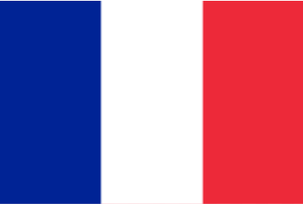
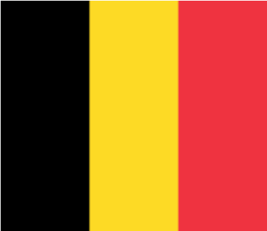
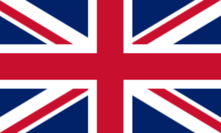

France
Although the French flag appears symmetrical, its vertical stripes have different proportions (30% blue, 33% white, and 37% red).

Belgium
The proportions of the Belgian flag are unique, featuring an unusual 13:15 ratio that makes it appear almost square when flown on a flagpole, while its colors were adopted from the coat of arms of the Duchy of Brabant during the Revolution of 1830.

The UK
The flag of Great Britain represents a combination of three flags: that of Saint George, the patron saint of England; Saint Andrew, the patron saint of Scotland; and Saint Patrick, the patron saint of Ireland.
Monaco
The flag of Monaco is identical to the flag of Indonesia in terms of colors and their arrangement, which led to a diplomatic dispute between the two countries in 1945; however, Monaco successfully defended its design.